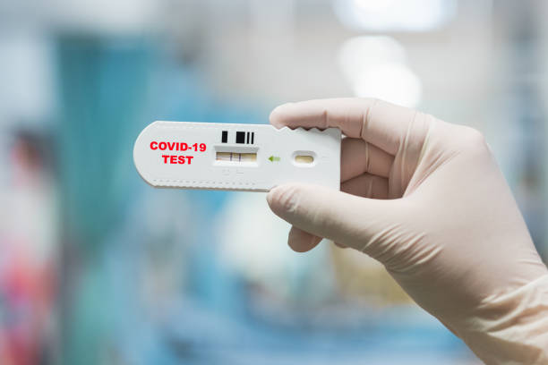
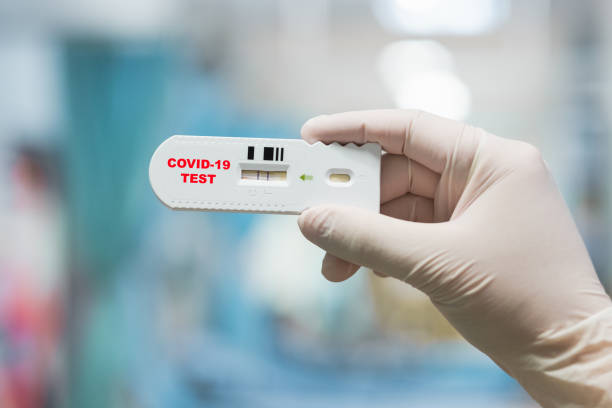

|
Las vacunas contra el COVID-19 han sido un pilar fundamental en la lucha contra la pandemia, ofreciendo protección
contra varias variantes del virus. Hasta la fecha, la Organización Mundial de la Salud (OMS) ha aprobado vacunas como
Oxford/AstraZeneca, Johnson & Johnson, Moderna, Pfizer/BioNTech, Sinopharm y Sinovac, tras rigurosos estudios clínicos
que garantizan su seguridad y eficacia. Estas vacunas han demostrado ser efectivas contra múltiples variantes, que
son mutaciones naturales del virus que pueden afectar su transmisibilidad y virulencia. A pesar de la aparición de
variantes como Alfa, Beta, Gamma, Delta y otras, las vacunas han mantenido un nivel significativo de eficacia, aunque
en algunos casos se han requerido ajustes en su composición para mejorar la protección. La vigilancia continua y la
adaptación de las vacunas son esenciales para mantener la eficacia frente a las nuevas variantes que puedan surgir.
|

 
